UD9: SERVICIOS WEB Y APLICACIONES WEB REACTIVAS¶
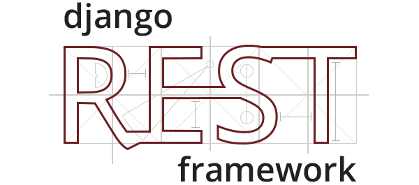
INTRODUCCIÓN¶
Un API es un servicio que proporciona acceso a datos y métodos que otras aplicaciones pueden utilizar, mediante el protocolo HTTP, lo cual permite que pueda ser integrado en gran variedad de aplicaciones.
La variante de API más popular para servicios web actuales se denomina REpresentational State Transfer (REST), o también Servicio REST o API REST. Consiste en una serie de directrices diseñadas para simplificar la comunicación entre cliente y servidor.
Request¶
La forma de interactuar con un servicio REST es mediante un objeto llamado petición, solicitud o request, que está formada por:
-
Endpoint: se trata de una URL que caracteriza el tipo de servicio (dato o acción) con el que estamos interactuando, dentro de un API.
-
Método: especifica cómo interactuar con el endpoint. Los métodos más usuales son:
- GET: Consulta de datos
- PUT: Modificación de datos
- POST: Creación de datos
- DELETE: Eliminación de datos
-
Datos: En aquellos métodos que necesiten cambio en los datos del sistema, se necesitará incluir en el request los datos a crear/modificar.
-
Cabeceras: Contiene los metadatos adicionales necesarios, como tokens de autenticación, tipo de contenido a devolver en la respuesta, políticas de cacheado...
Response¶
Cuando se hace una request a un servicio REST, obtenemos una respuesta (o response), que al igual que en el caso del request, contendrá una cabecera y datos (cuando corresponda). Los datos retornados, en forma de texto, estarán normalmente en formato JSON (aunque es también posible utilizar otros formatos como XML).
EVALUACIÓN¶
El presente documento, junto con sus correspondiente boletín de actividades (publicado adicionalmente), cubren los siguientes criterios de evaluación:
| RESULTADOS DE APRENDIZAJE | CRITERIOS DE EVALUACIÓN |
|---|---|
| RA7. Desarrolla servicios web reutilizables y accesibles mediante protocolos web, verificando su funcionamiento. | a) Se han reconocido las características propias y el ámbito de aplicación de los servicios web. b) Se han reconocido las ventajas de utilizar servicios web para proporcionar acceso a funcionalidades incorporadas a la lógica de negocio de una aplicación. c) Se han identificado las tecnologías y los protocolos implicados en el consumo de servicios web. d) Se han utilizado los estándares y arquitecturas más difundidos e implicados en el desarrollo de servicios web. |
LA LIBRERÍA REQUESTS DE PYTHON¶
La librería requests de python implementa los métodos HTTP que nos va a permitir interactuar con cualquier API REST. El primer paso es instalar la librería requests mediante el comando pip en un entorno virtual:
pip install requests
import requests
- api.open-notify.org: Utilizaremos este API REST para realizar varias peticiones de consulta.
- httpbin.org: Este API REST nos servirá para realizar peticiones de modificación/creación de datos, autenticación, entre otros.
Consulta de datos¶
Para hacer una consulta de datos a un endpoint que lo permita, utilizamos el método "get" de la librería requests, de la forma:
response = requests.get("http://api.open-notify.org/astros.json")
Para visualizar el objeto retornado, hacemos un print de response:
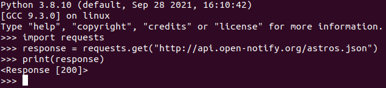
Si queremos ver los atributos del objeto response, podemos utilizar la función dir():
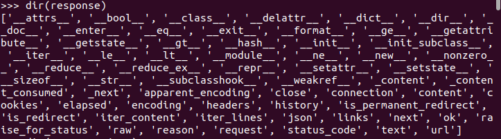
Para acceder al contenido de la respuesta, se pueden utilizar las siguientes opciones:
response.content() #respuesta en bruto (bytes)
response.text() #formato texto
response.json() #formato json
Utilización de parámetros de consulta¶
Si el endpoint lo permite, se pueden enviar parámetros de consulta en la petición \"get\" al servidor, con el fin de acotar los resultados.
Esto se puede llevar a cabo mediante el argumento \"params\" del método get. Este argumento ha de ser un diccionario con el parámetro/s a enviar al servidor. A continuación se muestra un ejemplo de consulta, para saber cuándo la Estación Espacial Internacional pasará por un determinado punto:
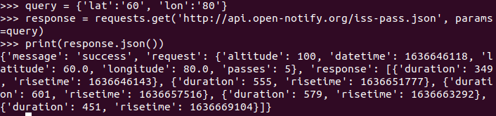
Creación de datos¶
Mediante httpbin.org es posible realizar peticiones tipo \"post\", aunque los datos no se almacenen realmente en una base de datos. Un ejemplo es el siguiente, donde se pasa al parámetro \"data\" un diccionario con los datos a crear:
response = requests.post('https://httpbin.org/post', data = {'valor':'nuevo'})
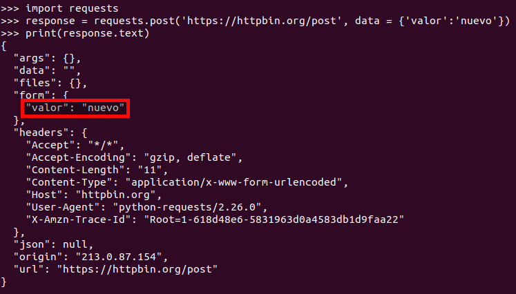
Modificación de datos¶
De modo similar al método post, se puede realizar una llamada mediante put, para la modificación de datos:
response = requests.put('https://httpbin.org/put', data = {'valor':'modificado'})
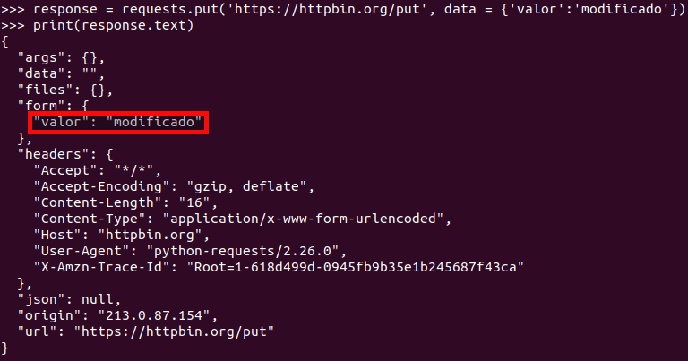
Acceso a las cabeceras¶
Para obtener los metadatos contenidos en la cabecera de la respuesta se utiliza el atributo headers del objeto response. Por ejemplo, para obtener la fecha y hora en que se produjo la respuesta:
print(response.headers\[\"date\"\])
Autenticación¶
Para interactuar con servicios REST que necesitan una autenticación previa se pueden utilizar varios métodos, dependiendo del tipo de autenticación que requiera el endpoint. A continuación veremos la autenticación Basic y la basada en OAuth.
Autenticación Basic¶
Es el método más simple y consiste en enviar un nombre de usuario y un password, equivalente a introducir usuario y password en un sitio web. En el ejemplo siguiente, se trata de obtener datos de la cuenta del usuario "user", y para ello se necesita enviar en la propia consulta los parámetros de autenticación para evitar un error de consulta no autorizada:
from requests.auth import HTTPBasicAuth
response = requests.get(
'https://api.github.com/user',
auth=HTTPBasicAuth('user', 'password')
O también, se puede realizar mediante una tupla:
requests.get('https://api.github.com/user', auth=('user', 'password'))
Autenticación Digest¶
Otro método común de autenticación es mediante Digest, de la forma:
from requests.auth import HTTPDigestAuth
url = 'https://httpbin.org/digest-auth/auth/user/pass'
response = requests.get(url, auth=HTTPDigestAuth('user', 'pass'))
Autenticación mediante sesión¶
La librería requests proporciona un objeto Session que permite conservar determinados parámetros para peticiones HTTP diferentes, así como cookies. Esto permite simular una sesión como si de un navegador web se tratase.
Un ejemplo de código puede ser el siguiente, en el que recuperamos los repositorios de un determinado usuario que se autentica previamente:
username = 'user'
token = 'XXX_token'
repos_url = 'https://api.github.com/user/repos'
gh_session = requests.Session()
gh_session.auth = (username, token)
print(gh_session.get(repos_url).text)
Autenticación OAuth¶
Existen dos estándares OAuth: OAuth1 y OAuth2. En este enlace puedes encontrar las diferencias fundamentales entre los dos métodos.
Para OAuth2, un ejemplo de autenticación mediante Google se detalla en esta página. Según estas instrucciones, el funcionamiento básico sería:
1. A modo de ejemplo, se muestra a continuación una API de acceso a un proyecto de Firebase:
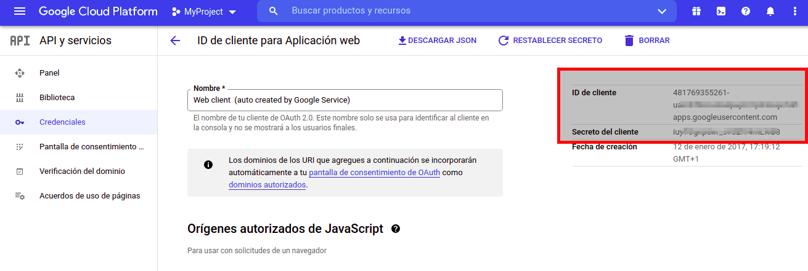
2. Luego, la aplicación cliente (la que estamos desarrollando) solicita un token de acceso del servidor de autorización de Google, extrae un token de la respuesta y envía el token a la API de Google a la que se desea acceder. El scope, que se envía como parámetro en esta solicitud de acceso, determina el conjunto de recursos y operaciones (dentro de la aplicación) a los que se puede acceder mediante el token. Es posible solicitar un scope, pero que se otorgue uno diferente, luego hay que comprobar el scope recibido.
3. En el acceso a una API, se adjunta el token de acceso en el encabezado de la solicitud HTTP. Los tokens de acceso son válidos solo para el conjunto de las operaciones y los recursos descritos en el scope de la solicitud de token. Por ejemplo, si se emite un token de acceso para la API de Google Calendar, no otorga acceso a la API de Contactos de Google. Sin embargo, puede enviar ese token de acceso a la API de Google Calendar varias veces para operaciones similares.
4. Los tokens otorgados tienen un tiempo de vida determinado, tras lo cual es necesario solicitar uno nuevo. Mediante el llamado token de actualización, que es un token proporcionado en el paso 2, diferente al token de acceso, se consigue obtener nuevos tokens de acceso una vez caducados mediante una solicitud específica de refresco.
NOTA: Existen diferentes variantes en el flujo de autenticación de OAuth2, dependiendo del tipo de aplicación que estemos desarrollando. En este enlace se pueden consultar diferentes flujos de autenticación para la librería requests. En este otro enlace puedes consultar, de forma gráfica, los diferentes flujos de autenticación (en este caso con Google).
Se puede experimentar con el espacio OAuth 2 de Google. Por ejemplo, para el caso de AI Platform Training & Prediction API (para el entrenamiento de modelos de ML), existe un servicio web para explorar todos los endpoints y sus especificaciones (Discovery Document), bajo la siguiente URL:
https://ml.googleapis.com/$discovery/rest?version=v1
Aunque no es necesario expedir un token de acceso para explorar este servicio (se puede consultar con un simple navegador), vamos a realizar los pasos que se deberían dar para invocar cualquier otro servicio que necesitase un token. A continuación se describen los pasos realizados en el espacio OAuth 2:
PASO 1: Seleccionamos la primera entrada del servicio "AI Platform Training & Prediction API v1" y pulsamos en "Authorize APIs" (bajo la sección "Select & authorize APIs"). Utiliza una cuenta de prueba que tengas de Google:
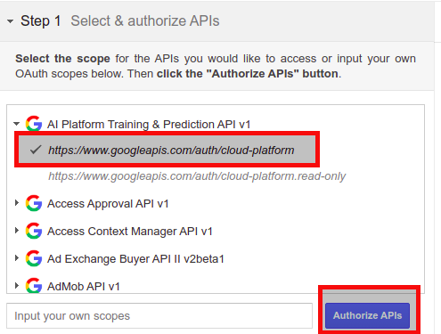
PASO 2: Tras pulsar "Authorize APIs" se despliega el siguiente paso (Exchange authorization code for tokens), donde ya viene informado el campo "Authorization code" (es el código que nos envía en primera instancia la plataforma de Google), y a continuación ya podemos pulsar el botón "Exchange authorization code for tokens":
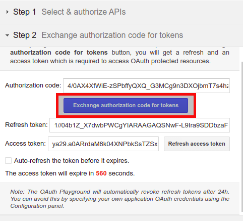
Tras pulsar este botón, se informan los campos "Refresh token" y "Access token", y se indica el tiempo tras el cual caducará el Access token (en segundos). Si se pulsa en el botón "Refresh access token", se obtendrá un nuevo "Access token".
PASO 3: En este paso, ya estamos preparados para acceder al endpoint para el cual hemos solicitado el token de acceso. Por tanto, introducimos la URL en el campo "Request URI" (no necesitamos introducir el token de acceso en la cabecera según la nota que se indica abajo). Pulsamos en "Send the request", y obtenemos la respuesta en la parte derecha del panel:
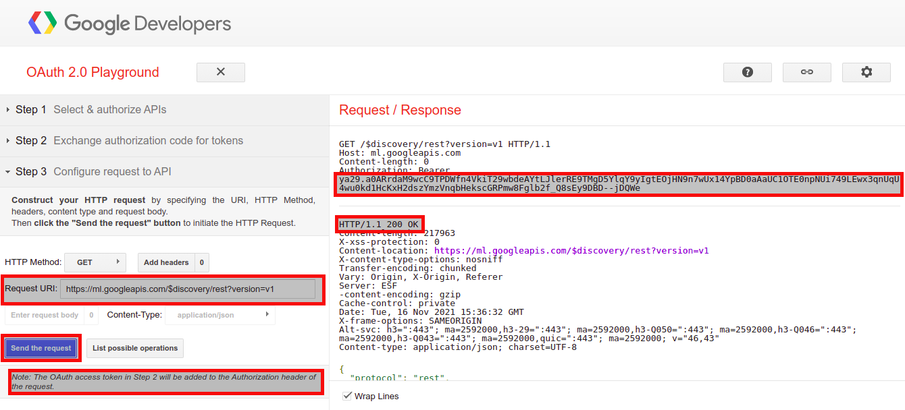
En la parte derecha se puede apreciar que el token de acceso se ha enviado como parte del request, y que se ha obtenido un código 200 satisfactorio en la respuesta. El cuerpo del mensaje se puede ver en formato JSON:
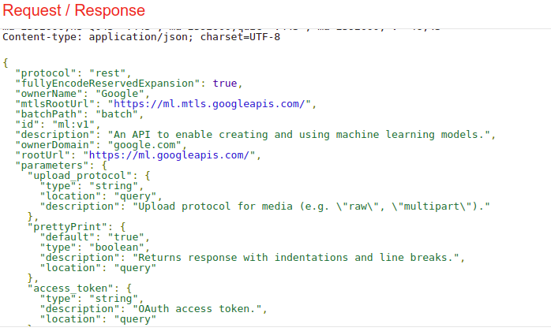
Gestión de errores¶
En las llamadas a API REST es necesario implementar mecanismos para contemplar las situaciones en que se produzca algún tipo de imprevisto. Esto proporciona robustez a las aplicaciones que desarrollemos.
En primer lugar, es necesario conocer los códigos de respuesta que existen, y su significado. Podrás encontrar una lista completa en este enlace.
A continuación, tenemos varias posibilidades para capturar los posibles errores. Podemos realizar algún tipo de acción con un bloque condicional:
response = requests.get("http://api.open-notify.org/astros.json")
if (response.status_code == 200):
print("La solicitud se ha realizado con éxito.")
# Aquí insertar código cuando la solicitud es exitosa
elif (response.status_code == 404):
print("No se ha encontrado ningún resultado.")
# Aquí insertar código cuando la solicitud NO es exitosa
También podemos utilizar un bloque try/except:
try:
response = requests.get('http://api.open-notify.org/astros.json')
response.raise_for_status() # Lanzará una excepción si se ha producido un error que será capturado por el bloque "except"
# Código adicional, ejecutado si no se ha producido ningún error
except requests.exceptions.HTTPError as error:
print(error)
# Código a ejecutar si se ha producido un error
Descarga de HTML¶
Otra de las utilidades de la librería requests es poder obtener el código HTML de una página web. Esto es especialmente importante para el caso de web scraping.
Para ello, bastará con realizar una petición de tipo GET a la URL cuyo código HTML queremos descargar, de la forma:
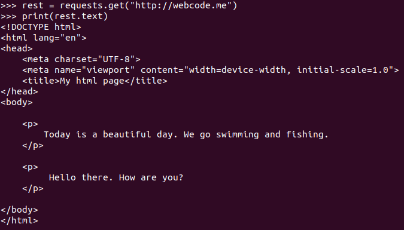
DJANGO REST FRAMEWORK¶
En los apartados anteriores hemos visto cómo consumir servicios REST mediante la librería requests de Python.
En esta segunda parte del documento vamos a aprender cómo crear servicios REST mediante el framework Django para poder desacoplar la capa backend de la capa cliente (frontend). Estos servicios REST podrán ser consumidos posteriormente por aplicaciones web cliente, apps móviles, aplicaciones de escritorio o incluso otros sistemas backend. Vamos a continuar utilizando, a modo ilustrativo, el ejemplo del portfolio.
En los siguientes subapartados vamos a instalar la app de Django que nos permite programar servicios REST (Django REST Framework), desmenuzaremos las distintas partes en que se compone un servicio REST (serializadores, vistas y URLs), así como la herramienta de Django para poder probarlos de forma visual. Finalmente, estableceremos la forma de documentar la API REST para que los desarrolladores del lado cliente puedan utilizarla adecuadamente.
Toda la documentación referente a Django REST Framework la podrás encontrar en este enlace.
Por una parte, tenemos un tutorial introductorio en el que podemos revisar lo más importante del framework, bajo el submenú Tutorial:
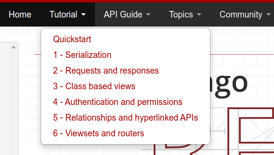
Y la documentación exhaustiva la encontramos bajo API Guide:
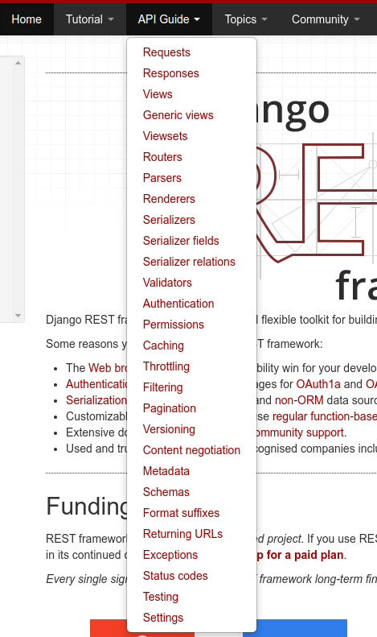
Existen también numerosos recursos en Internet, y videotutoriales que explican en profundidad la utilización de este framework.
Instalación¶
Para poder utilizar Django REST Framework (DRF a partir de ahora), hemos de instalar la app correspondiente (junto con sus dependencias) mediante pip, según se detalla en este enlace. También se detalla en esta breve guía como configurar las URLs de DRF para probar los servicios REST mediante el API navegable.
Asegúrate de incluir lo siguiente en urls.py:
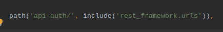
Organización de ficheros¶
Durante el desarrollo de los servicios web vamos a crear, como mínimo, dos tipos de objetos: serializadores y vistas. Para poder organizar estos nuevos objetos convenientemente y nuestras apps puedan ser exportables, vamos a crear un nuevo directorio \"api\" dentro de cada app para la que desarrollemos servicios REST. Sirva el siguiente como ejemplo:
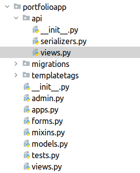
Dentro de la nueva carpeta "api" crearemos un nuevo fichero __init__.py, y como mínimo habrá dos ficheros serializers.py y views.py (para los serializadores y vistas, correspondientemente).
Serializadores¶
Los serializadores son equivalentes, en el modelo vista-controlador, a los formularios de entrada de datos en el sistema. Funcionan en dos sentidos:
- Transforman tipos de datos complejos de Python, muchas veces extraídos de los modelos, en ficheros de texto plano en formato JSON o XML (entre otros). A este paso se le llama serialización.
- Conversión de datos JSON o XML a tipos complejos de datos en Python, previa validación de los datos (como un formulario). A este paso se le llama deserialización.
En nuestro proyecto de portfolio, necesitamos serializadores para:
- Listado de proyectos
- Formulario de proyecto
Normalmente, utilizaremos un par serializador-vista para las listas, y otro par para las operaciones CRUD de un objeto. En el primer caso, consultaremos una lista (paginada o no) y necesitaremos menos campos; en el segundo caso, necesitaremos recuperar todo (o casi todos) los campos de un objeto, e implementar más validaciones para la consistencia de los datos.
Toda la información sobre serializadores la vas a encontrar en estos enlaces:
Categorías¶
Dado que el modelo de categorías contiene un solo campo (el nombre) podemos crear un serializador que nos sirva tanto para listar categorías, como para acceder a su detalle. Vamos a empezar con este caso, que es el más sencillo.
Definimos un solo serializador de categorías del siguiente modo (en serializers.py):
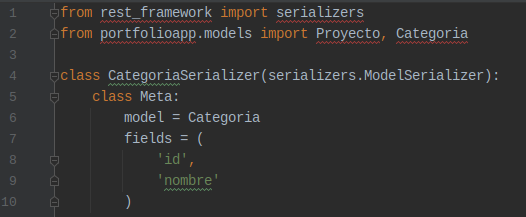
Podríamos haber incluído solo el campo "nombre", pero es conveniente incluir el "id" por si lo necesitamos en el frontend para realizar cualquier tipo de operación con una categoría, para lo cual necesitaríamos utilizar su id concreto.
Listado de proyectos¶
Una primera versión de este serializador sería la siguiente (insertamos el siguiente código en serializers.py de la app portfolioapp):
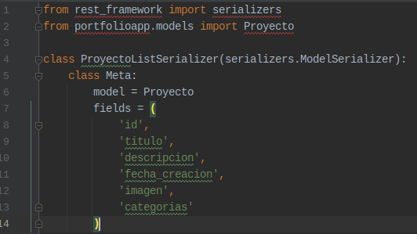
Prácticamente estamos utilizando todos los campos del modelo Proyecto, con lo que vamos a introducir el siguiente cambio: el campo "descripcion" va a ser recortado para que incluya los 30 primeros caracteres (al ser una lista, necesitamos menos detalle). Para ello, hacemos las siguientes modificaciones:
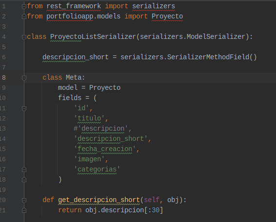
Hemos realizado los siguientes cambios:
- Comentamos el campo 'descripcion' y añadimos el campo 'descripcion_short'.
- Como 'descripcion_short' no existe en el modelo, creamos un atributo adicional 'descripcion_short' a partir de la clase SerializerMethodField, y lo incluimos en la lista 'fields'.
- Por último, creamos un método get_descripcion_short que recibe como parámetro el objeto que estamos tratando (el objeto proyecto), y devuelve los 30 primeros caracters de su descripción.
NOTA: Cuando definimos un SerializerMethodField, el método correspondiente que deriva su valor tendrá el nombre get_[NOMBRE DEL CAMPO], y recibe como parámetro el objeto asociado al modelo definido en Meta.
En estos momentos aún no podemos probar la salida del serializador, pero si avanzamos en el tiempo y damos por supuesto que ya tenemos la vista correspondiente programada (y su URL), obtendríamos la siguiente salida:
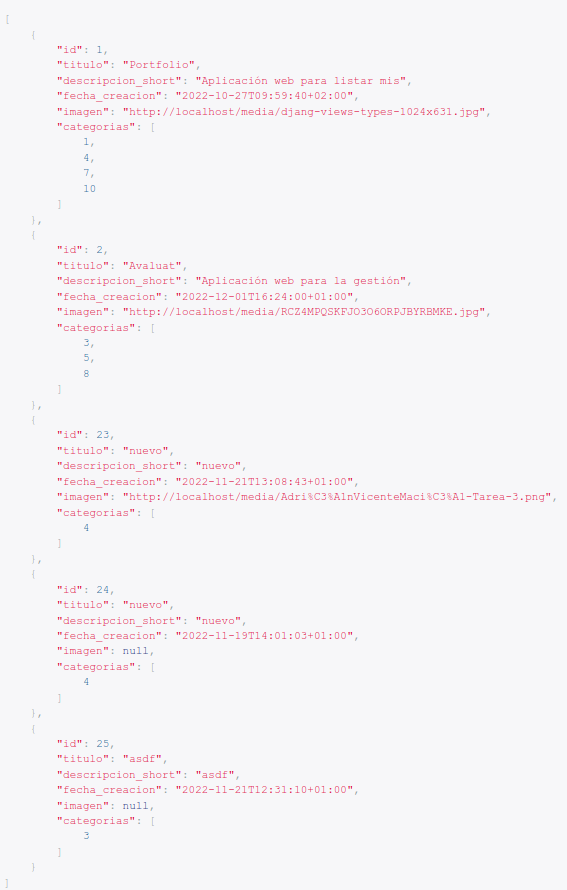
Hemos hecho un gran avance. Hemos conseguido generar una lista de proyectos, con sus correspondientes campos, y uno de ellos es una versión recortada de la descripción del proyecto.
Pero existe un aspecto que necesitamos cambiar: el campo "categorias" solo nos devuelve el ID de las categorías asociadas al proyecto. Lo ideal es que nos devolviese tanto el ID como su descripción, y así podríamos visualizar (en el lado cliente) la lista con el nombre de las categorías.
Para poder realizar esto, necesitamos serializar los objetos Categoria dentro de la lista de proyectos. Por tanto, se trata de un serializador anidado.
Para crear este serializador anidado, necesitamos utilizar el serializador de categorías que hemos definido anteriormente.
Con este serializador, vamos a poder serializar a nuestra conveniencia las categorías de cada proyecto, pero ¿cómo?. La respuesta es: definiendo un nuevo campo en ProyectoListSerializer de tipo SerializerMethodField (como description_short) pero cuyo valor esté serializado a su vez por CategoriaSerializer. Modifica ProyectoListSerializer con el siguiente código:
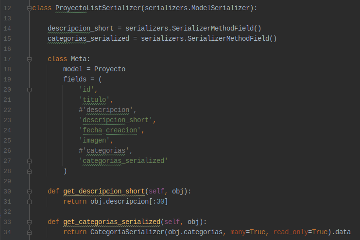
Ahora observamos la salida:
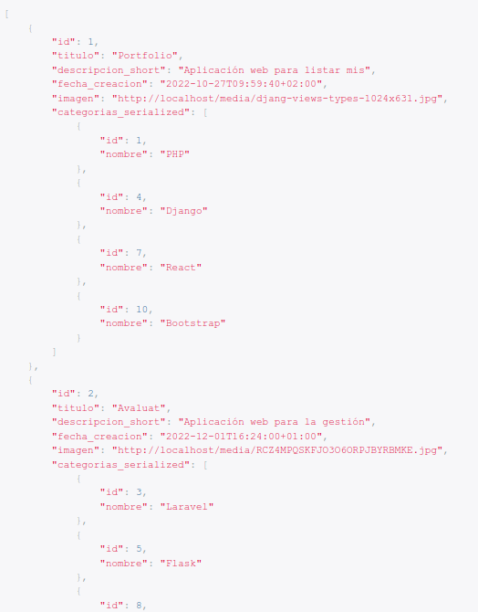
Ahora sí vamos a poder utilizar este array JSON y utilizarlo desde código JavaScript para representar correctamente la lista de proyectos junto con sus categorías.
Entonces, ¿qué hemos hecho exactamente con el método get_categorias_serialized? Hemos utilizado el serializador CategoriaSerializer para transformar las categorias de un proyecto (que al final es una lista de los IDs de las categorías asociadas) a una lista de diccionarios JSON con el par id/nombre.
Esto nos lleva a la siguiente pregunta: ¿podríamos utilizar un serializador en cualquier parte de un código Python para serializar un determinado objeto? La respuesta es que sí, como se explica en este videotutorial. Enfoca este vídeo estableciendo el paralelismo entre formularios de Django, y serializadores (is_valid, validate ...).
Detalle de proyecto¶
Ahora queremos crear un serializador que nos sirva para poder modificar todos los campos de un proyecto. Ya hemos desarrollado anteriormente el formulario de proyecto mediante el modelo vista-controlador:

Por tanto hemos de incluir todos estos campos en el serializador:
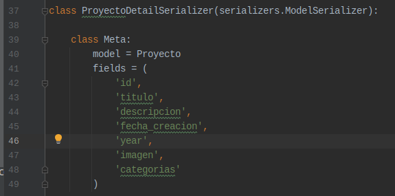
NOTA: aunque incluyamos el id de un objeto en el serializador, no vamos a poder modificarlo desde el frontend. La columna "id" o "pk" siempre es de lectura.
Vistas y Mixins¶
Las vistas en los servicios REST siguen cumpliendo el mismo objetivo que las vistas en el modelo vista-controlador: implementan la lógica de negocio y actúan sobre los datos introducidos mediante el serializador correspondiente (formularios, en el caso del modelo vista-controlador).
Cabe destacar también lo siguiente:
- Las vistas pueden o no tener asociado un seralizador (de igual modo que las vistas del modelo vista-controlador, que no necesariamente han de tener un formulario asociado), dependiendo de su propósito. La misión de las vistas es recibir un request, y devolver un response, y muchas veces la lógica de negocio que implementan no requiere manejar ningún modelo para devolver información (se puede devolver una confirmación al finalizar un proceso).
- Al igual que en modelo vista-controlador, existen vistas basadas en función y vistas basadas en clase, con las mismas ventajas y desventajas.
- La tendencia es desarrollar los serializadores para que sean lo más simple posibles, y dejar el peso de la lógica de negocio a las vistas. Por ejemplo, se pueden establecer relaciones entre modelos en un serializador para actualizar diferentes modelos al mismo tiempo, pero las buenas prácticas aconsejan que sea la vista que recoge los datos, quien se encargue de hacer esto.
Primero vamos a revisar el aspecto de las vistas FBV, en este enlace, para, a continuación, revisar el ejemplo más básico de una vista basada en la clase APIView, en este enlace.
A continuación revisamos lo que son las vistas genéricas de DRF, en este enlace, haciendo especial hincapié en los Mixins (ListModelMixin, CreateModelMixin, RetrieveModelMixin, UpdateModelMixin, DestroyModelMixin).
Por último, revisamos los viewsets (haciendo especial hincapié en el GenericViewSet).
Tras esta revisión, concluimos lo siguiente:
- Cuando hagamos operaciones CRUD sobre un modelo, utilizaremos la vista GenericViewSet en combinación con los mixins de modelo, según las operaciones que necesitemos hacer sobre dicho modelo.
- Para implementar lógicas de negocio que no sean particulares sobre un determinado modelo (por ejemplo, no involucren a ningún modelo o a varios de ellos), utilizaremos la vista APIView.
Lista de categorías¶
Vamos a implementar nuestra primera vista, que va a ser la lista de categorías. El serializador ya lo tenemos, ahora falta elegir la vista más adecuada.
Podríamos pensar en utilizar una vista que herede de ModelViewSet, ya que implementaría todas las operaciones CRUD sobre un determinado objeto (listado, creación, actualización, ...) y nos serviría para todo lo relacionado con dicho objeto. Pero en este caso estaríamos posibilitando realizar más operaciones que las realmente necesarias. Pensemos en el desplegable de categorías de la parte pública del portofolio: solo hemos de listar las categorías mediante un dropdown, no vamos a realizar ninguna operación más, por lo tanto no deberíamos exponer, mediante esta vista, más de lo necesario (creación, actualización, etc.).
Por tanto, necesitamos una vista que solo se dedique a mostrar el nombre de las categorías, nada más.
Dicho esto, vamos a utilizar la vista GenericViewSet en combinación con el mixin ListModelMixin para recuperar la lista de categorías. En api/views.py:
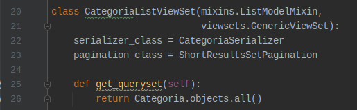
Ahora necesitamos configurar la URL correspondiente para poder comprobar el resultado. Para ello, introducimos el siguiente código en urls.py:
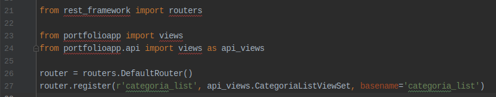
Más información sobre el objeto router, la encontrarás en este enlace.
Has de incluir la siguiente línea en urls.py, en urlpatterns:
path('api/', include(router.urls)),
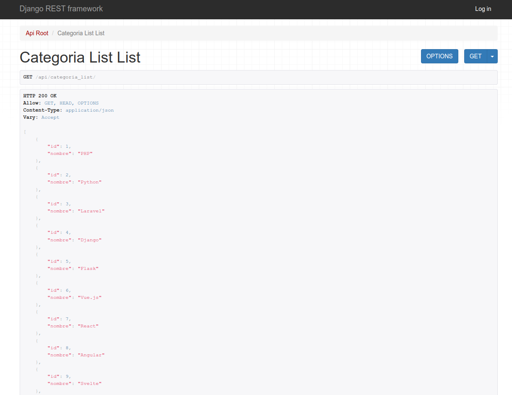
Enhorabuena, ¡has configurado tu primer servicio REST!
Mantenimiento de categorías¶
En este apartado vamos a implementar el mantenimiento de categorías de dos formas: mediante la clase ModelViewSet y mediante la combinación de mixins con GenericViewSet.
Cabe hacer notar, en un primer lugar, que cualquier vista que implique alteración de los datos en la BBDD debería implementar mecanismos de seguridad para que solo los usuarios autorizados puedan realizar determinadas operaciones (excepto la de contacto, que es anónima).
Salvando el punto de la autenticación, que abordaremos en la siguiente unidad, vamos a implementar una vista CRUD sobre el objeto de categorías. Para ello, introducimos el siguiente código en api/views.py:
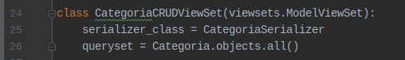
Y su correspondiente URL:
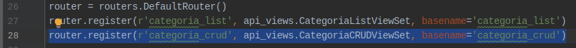
Ahora, si consultamos la URL http://localhost/api/categoria_crud/ veremos la lista de categorías, y al final de la página veremos un pequeño formulario para introducir nuevas categorías:
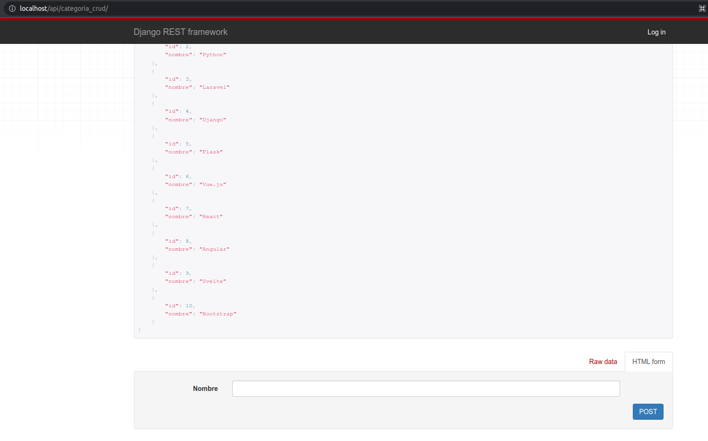
En la pestaña "Raw data" podríamos introducir los datos en formato JSON para crear una nueva categoría, tras pulsar el botón POST. Esto nos evita utilizar herramientas adicionales, como Postman.
Creamos una nueva tecnología en el aula, y volvemos a visualizar la lista entera de categorías. Comprobamos que se ha creado correctamente. Pero, ¿cómo podríamos actualizarla o eliminarla?
Para ello tomamos el ID de la nueva categoría, y anexamos dicho ID a la URL anterior, de la forma:
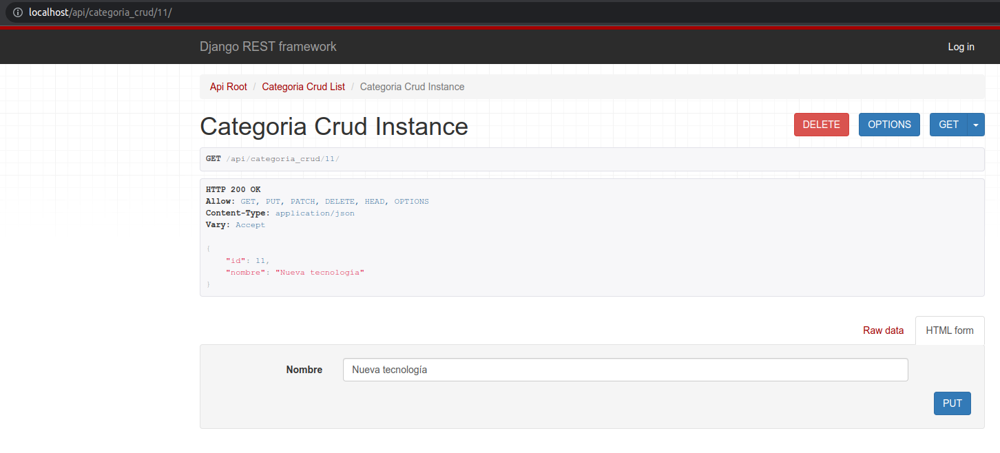
Vemos que en la URL indica el ID 11 (es solo un ejemplo de un ID existente), y además ahora en el formulario el botón dice PUT (modificación) en lugar de POST (creación), y se habilita el botón DELETE.
Por tanto, hemos creado un servicio REST que implementa todas las operaciones CRUD sobre el objeto Categoría.
¿Cómo podríamos restringir determinadas operaciones CRUD sobre este modelo? Por ejemplo, queremos poder crear, recuperar y actualizar categorías, pero no borrarlas. Para ello, utilizaríamos la vista GenericViewSet en combinación con los mixins adecuados, como se muestra en el siguiente código (insértalo en api/views.py):
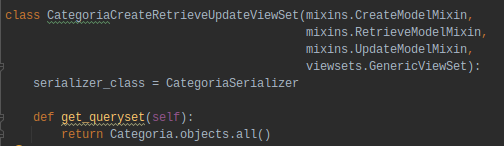
Creamos la correspondiente URL:
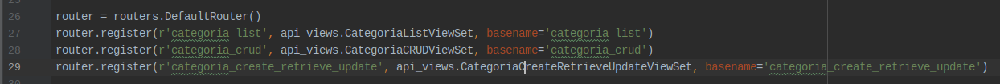
Ahora, accedemos al detalle de una categoría y comprobamos que no aparece el botón DELETE, y vemos las posibles operaciones según el directiva Allow:
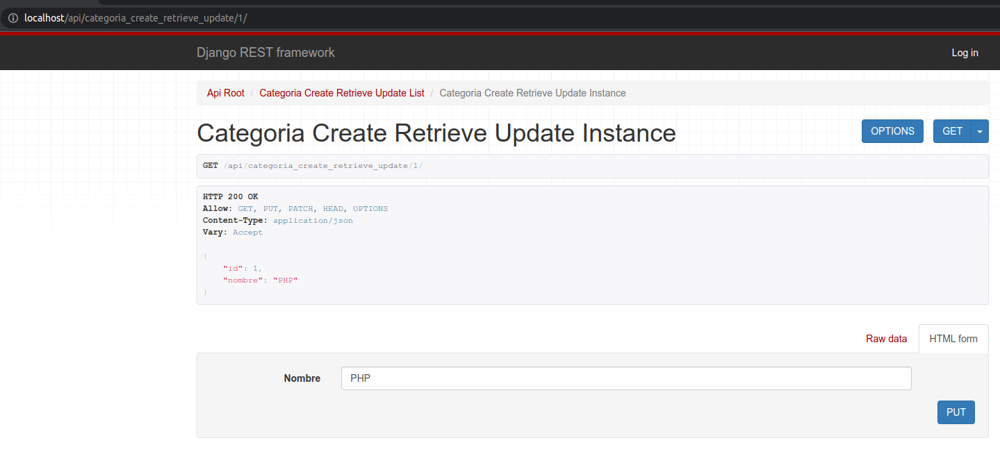
Lista de proyectos¶
Como actividad de clase, implementamos la vista que liste todos los proyectos, y que utilice el serializador ProyectoListSerializer.
Mantenimiento de proyectos¶
Para el servicio web de mantenimiento de proyectos (consulta, creación, actualización, borrado) vamos a utilizar el serializador ProyectoDetailSerializer que ya hemos programado anteriormente. Insertamos la siguiente vista en api/views.py:
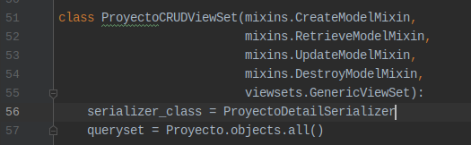
Configuramos la URL:
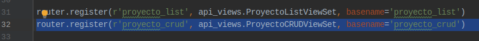
Y probamos con un ID de proyecto existente:
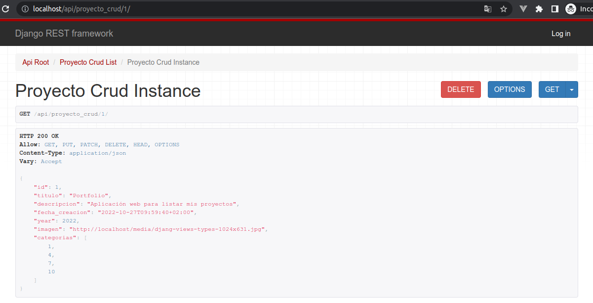
Si vamos al final de la página veremos un formulario para poder realizar las operaciones CRUD con el proyecto y probar el servicio web:
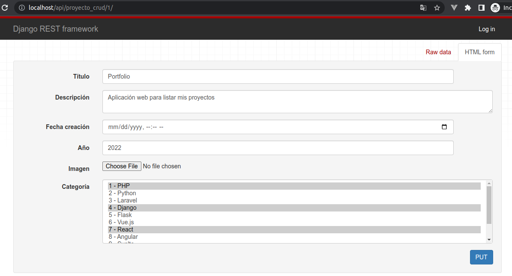
También podemos modificar directamente el JSON mediante la pestaña Raw data:
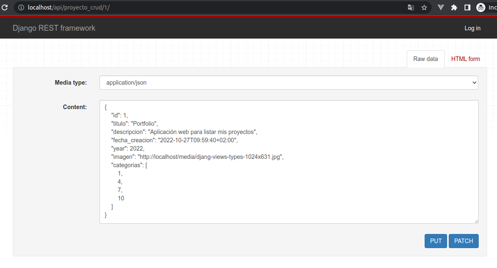
Métodos de las vistas¶
Tal y como vimos en las CBV del modelo vista-controlador, existen determinados métodos que podemos sobreescribir para modificar el comportamiento de las vistas estándar.
En este enlace se citan los posibles métodos, que revisamos en la clase. Iremos utilizando algunos de estos métodos en los siguientes apartados.
Validaciones¶
En este apartado vamos a ver cómo podríamos, por ejemplo, comprobar que la fecha de creación pertenece al mismo año que el enviado en el campo "year". Esta comprobación la realizaremos en la creación y en la actualización del proyecto.
Para ello, vamos a sobreescribir los métodos perform_create y perform_update de la vista ProyectoCRUDViewSet, del siguiente modo:
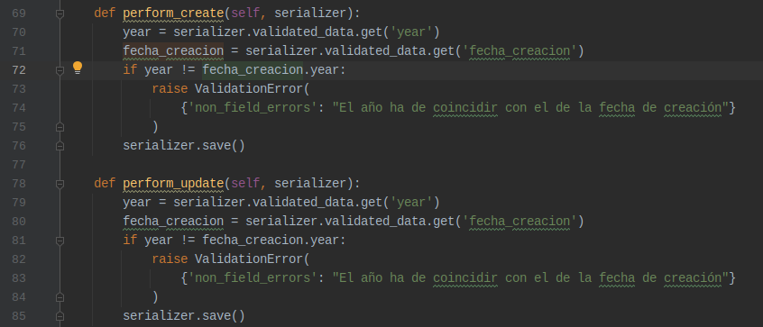
Hemos de hacer la importación previamente de ValidationError:
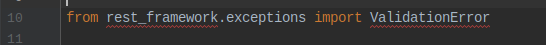
NOTA: Como se ve, podemos crear un método (lo podemos llamar según nuestra conveniencia) que reaproveche mucho código que se repite en los dos métodos, e invocarlo desde perform_create y perform_update. Lo realizamos como ejercicio de clase.
Vamos a probar que salta el error. Introducimos un año diferente al de la fecha de creación:
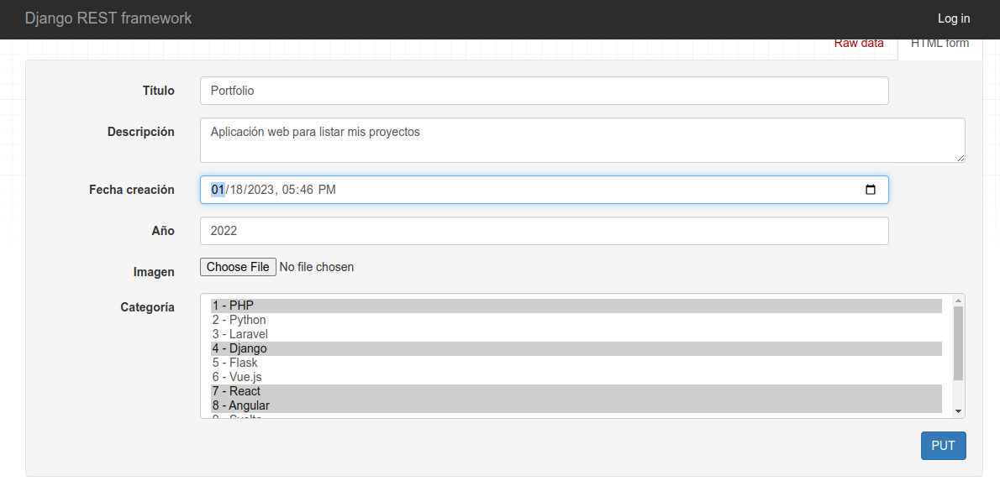
Al pulsar en el botón PUT, obtenemos el siguiente error:
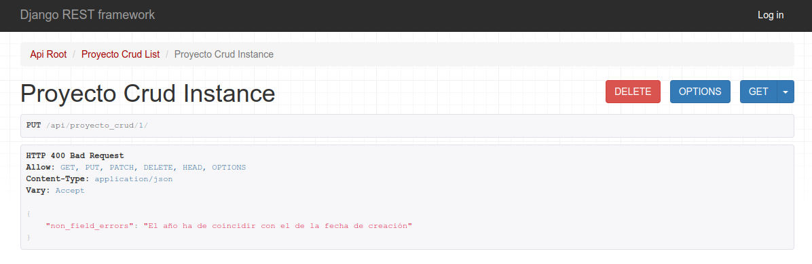
Ésta será la respuesta HTTP que se devolverá a la parte front, con código 400, y con un JSON en el body que contenga el diccionario con los errores encontrados. Estos errores tendrán que ser procesados por la parte cliente y representados convenientemente.
NOTA: también disponemos del método perform_destroy, para el caso del mixin DestroyModelMixin, si fuese necesario.
Parámetros¶
Imaginemos que prentendemos filtrar los proyectos posteriores a un determinado año. Esto lo podríamos realizar enviando un parámetro a la vista ProyectoListViewSet que contenga el año. Este parámetro será recogido en el método get_queryset, el cual devolverá un queryset filtrando por el número de año. Veamos cómo queda la lógica de este método:
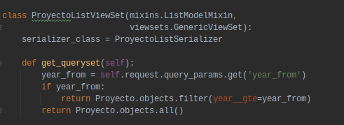
Y el resultado, con el parámetro en la URL:
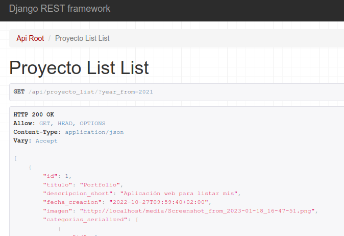
Como actividad en clase, vamos a realizar el filtrado por una determinada categoría.
Ordenación¶
Para establecer la ordenación de una lista de objetos podríamos utilizar parámetros para enviar por URL el tipo de ordenación que necesitamos. Pero DRF nos proporciona un backend de ordenación que nos permite realizar esto con la mínima lógica.
Para establecer la ordenación por defecto de un queryset por el campo "fecha_creacion", basta con establecer los atributos filter_backends y ordering en la vista correspondiente, de la forma:
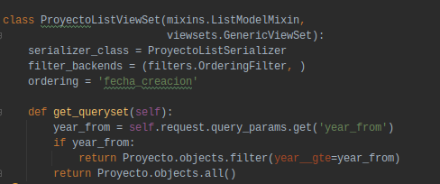
De esta forma, consultamos el resultado de este endpoint y podemos comprobar que se ha ordenado por fecha de creación.
Si quisiésemos poder ordenar por varios campos, de forma ascendente o descendente, hemos de utilizar el atributo "ordering_fields" de la forma:
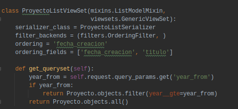
Ahora, al consultar el endpoint con el API navegable de DRF, aparecerá un nuevo botón llamado "Filtros", que nos permitirá establecer la ordenación que pretendamos:
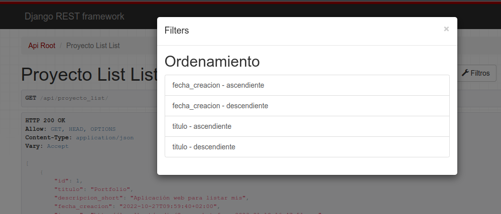
Al pulsar sobre alguna de las opciones, veremos que la URL se modifica convenientemente para acomodar un nuevo parámetro o parámetros de ordenación:
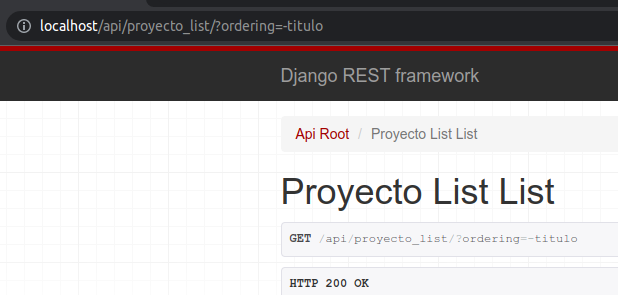
Búsqueda¶
Al igual que en el caso de la ordenación, podríamos utilizar parámetros en el método get_queryset para poder establecer una búsqueda por determinados campos. Pero DRF también nos proporciona un mecanismo para poder buscar por campos con el mínimo código, utilizando el SearchFilter backend. Para ello, modificamos de nuevo la vista y agregamos el SearchFilter backend a la tupla de filter_backends, y definimos el atributo search_fields, de la forma:
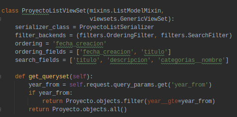
En este caso estamos permitiendo la búsqueda por título y descripción, y además por el nombre de una categoría asociada al proyecto. En el API navegable, vemos a que al pulsar sobre el botón Filtros nos aparece un nuevo campo Search. Al introducir un valor en este campo, se añade un nuevo parámetro \"search\" a la URL:
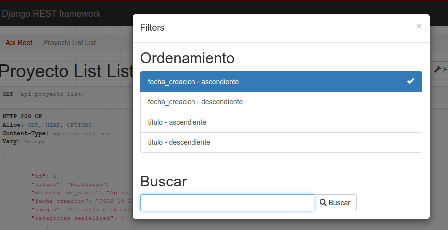
Y la URL:
Paginación¶
Otra de las funcionalidades que hemos ido desarrollando a lo largo de los proyectos del curso ha sido la paginación de las listas. En este aspecto, DRF también nos proporciona un método sencillo para paginar nuestras listas, basándonos en este enlace.
Como se explica en la documentación, existen varios métodos para establecer el tamaño de la paginación. Nos interesa tener varios tamaños de paginación para poder utilizarlos según nos sea conveniente. Para ello, creamos un nuevo fichero pagination.py en un nuevo directorio "api" dentro de la app "common" con tres tipos de paginación:
- LargeResultsSetPagination: tamaño 50 por página
- StandardResultsSetPagination: tamaño 20 por página
- ShortResultsSetPagination: : tamaño 5 por página
Creamos las clases correspondientes como actividad de clase, dentro de la app portfolioapp.
Ahora utilizamos una de estas clases dentro de la vista CategoriaListViewSet:
Y comprobamos la salida paginada en el API navegable:
Vistas sin serializador¶
Es posible que necesitemos programar una vista que solo sea el punto de entrada para ejecutar una parte de nuestra lógica de negocio, sin necesidad de recibir o devolver datos. Por ejemplo: un proceso en nuestra aplicación avaluapp que se encargue de calcular las notas finales del alumnado a partir de las notas parciales de los criterios de evaluación, en cada una de las unidades.
En este caso, no necesitamos recibir ningún dato ni devolverlo, simplemente hemos de recibir la petición de un usuario autorizado, y devolver una respuesta de confirmación cuando se haya ejecutado correctamente.
En este caso no necesitamos serializar ni deserializar estructuras de datos (las operaciones se harían directamente en la base de datos). Por tanto, éste sería un claro ejemplo de una vista que implementa una lógica de negocio, pero no utiliza los datos recibidos para ejecutarla.
En este apartado vamos a realizar un ejemplo básico de vista sin serializador, con el fin de convertir todos los nombres de las categorías para que la primera letra sea mayúscula y las demás minúsculas. Esta operación la podríamos realizar de otras formas más efectivas, pero sirva como ejemplo ilustrativo.
Vamos a realizar la misma vista mediante CBV y FBV, con el método GET y sin parámetros.
Para el caso de CBV utilizamos la vista APIView, que es la más sencilla de las CBV de DRF. La vista sería del siguiente modo:
Ahora creamos la URL, pero no la podemos registrar con el router como las demás vistas basadas en vistas genéricas, hemos de configurarla en la lista urlpatterns, como las configuradas en el modelo vista-controlador, de la forma:
Ahora vamos a programar una vista basada en función que realice lo mismo. Previamente hemos de importar el decorador api_view:
from rest_framework.decorators import api_view
Y programamos la vista de la siguiente forma:
Por último, configuramos la URL en la lista urlpatterns:
API navegable de DRF: test y documentación¶
DRF nos proporciona de serie una herramienta para poder probar y documentar los servicios web programados, llamada "browsable API", que hemos ido utilizando a lo largo de este tutorial para verificar los resultados.
En este enlace encontrarás todo lo referente a la documentación de servicios REST en DRF, tanto lo que concierne a módulos externos con los que poder documentar nuestras APIs como el API navegable.